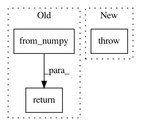

705d7ff759a0b76ddf1b30ab8ef135c0b67efa8b,art/attacks/evasion/projected_gradient_descent/projected_gradient_descent_pytorch.py,ProjectedGradientDescentPytorch,generate,#ProjectedGradientDescentPytorch#Any#Any#,123
Before Change
else:
targets = y
inputs = torch.from_numpy(x).to(self.classifier._device)
targets = torch.from_numpy(targets.astype(float)).to(self.classifier._device)
// TODO
// if self.random_eps:
// ratio = self.eps_step / self.eps
// self.eps = np.round(self.norm_dist.rvs(1)[0], 10)
// self.eps_step = ratio * self.eps
// for _ in range(max(1, self.num_random_init)):
// adv_x = x.astype(ART_NUMPY_DTYPE)
adv_x = inputs
for _ in range(self.max_iter):
adv_x = self._compute(
adv_x,
inputs,
targets,
self.eps,
self.eps_step,
False
// self.num_random_init > 0 and i_max_iter == 0,
)
// TODO
// if self.num_random_init > 1:
// rate = 100 * compute_success(
// self.classifier, x, targets, adv_x, self.targeted, batch_size=self.batch_size
// )
// if rate_best is None or rate > rate_best or adv_x_best is None:
// rate_best = rate
// adv_x_best = adv_x
// else:
// adv_x_best = adv_x
// logger.info(
// "Success rate of attack: %.2f%%",
// rate_best
// if rate_best is not None
// else 100 * compute_success(self.classifier, x, y, adv_x_best, self.targeted, batch_size=self.batch_size),
// )
return adv_x.cpu().detach().numpy()
def _compute_perturbation(self, batch, batch_labels):
// Pick a small scalar to avoid division by 0
tol = 10e-8
After Change
if mask is not None:
// Ensure the mask is broadcastable
if len(mask.shape) > len(x.shape) or mask.shape != x.shape[-len(mask.shape):]:
raise ValueError("Mask shape must be broadcastable to input shape.")
adv_x_best = None
rate_best = None
In pattern: SUPERPATTERN
Frequency: 3
Non-data size: 3
Instances
Project Name: IBM/adversarial-robustness-toolbox
Commit Name: 705d7ff759a0b76ddf1b30ab8ef135c0b67efa8b
Time: 2020-04-23
Author: M.N.Tran@ibm.com
File Name: art/attacks/evasion/projected_gradient_descent/projected_gradient_descent_pytorch.py
Class Name: ProjectedGradientDescentPytorch
Method Name: generate
Project Name: IBM/adversarial-robustness-toolbox
Commit Name: 46b700a1b63488408121f1edf9df3df01d345a17
Time: 2019-02-21
Author: M.N.Tran@ibm.com
File Name: art/classifiers/detector_classifier.py
Class Name: DetectorClassifier
Method Name: loss_gradient
Project Name: geomstats/geomstats
Commit Name: 9d6281d3b2f472e5e130dbf88078c433d0795f46
Time: 2020-04-24
Author: ninamio78@gmail.com
File Name: geomstats/_backend/pytorch/__init__.py
Class Name:
Method Name: all